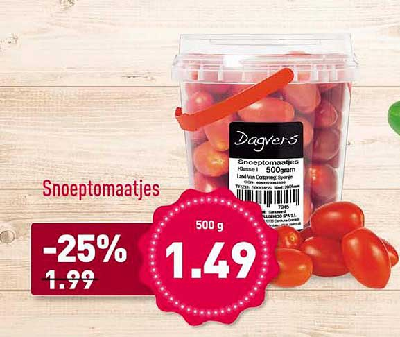

Waarom hebben wij gekozen voor Snoeptomaatjes als product?
wij hebben gekozen voor snoeptomaatjes omdat dit een lekkere kleine snack is en snoeptomaatjes ook gezond zijn. Snacktomaatjes zijn gemakkelijk mee te nemen en daarom altijd en overal te eten. Snacktomaatjes bij de lunch of als tussendoortje verdeelt de groenteconsumptie over de hele dag Snoeptomaatjes zijn er in verschillende soorten en kleuren. Dat zorgt meteen voor variatie!
waarom zijn snoeptomaatjes gezond?
snoeptomaatjes zijn gezond omdat het helpt om de dagelijkse groenten binnen te krijgen én is een alternatief voor ongezonde snacks! Snacktomaatjes zijn een bron van kalium. Kalium zorgt er samen met natrium voor dat je spieren goed werken, door het goed geleiden van zenuwprikkels. Ook is kalium belangrijk voor een gezonde bloeddruk, door het bloeddruk verhogende effect van natrium te neutraliseren. Vanwege de kalium zijn snoeptomaatjes gezond voor het op peil houden van de bloeddruk, de werking van de spieren en de geleiding van het zenuwstelsel. Waar zijn tomaten nog meer goed voor? Snacktomaatjes zijn ook rijk aan vitamine C, dat een hele gezonde werking heeft. Vitamine C zorgt voor een betere weerstand en het verminderen van vermoeidheid. Ook voor gezonde bloedvaten, botten, tanden en tandvlees en huid is vitamine C erg belangrijk.
Hoe zijn de Snoeptomaatjes gemaakt?
snoeptomaten worden op dezelfde manier als tomaten gekweekt: in kassen met de juiste temperatuur en met hommels voor de bestuiving van de planten.
Prijs: Snoeptomaten zitten in een plastic bakje. 10 stuks in 1 bakje voor €1,50.